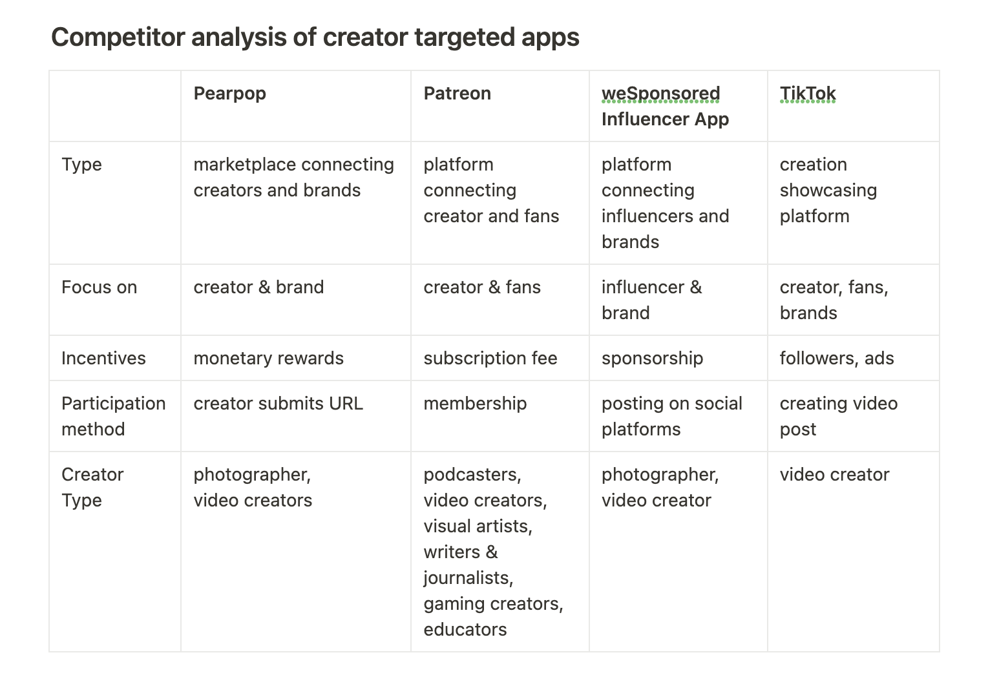
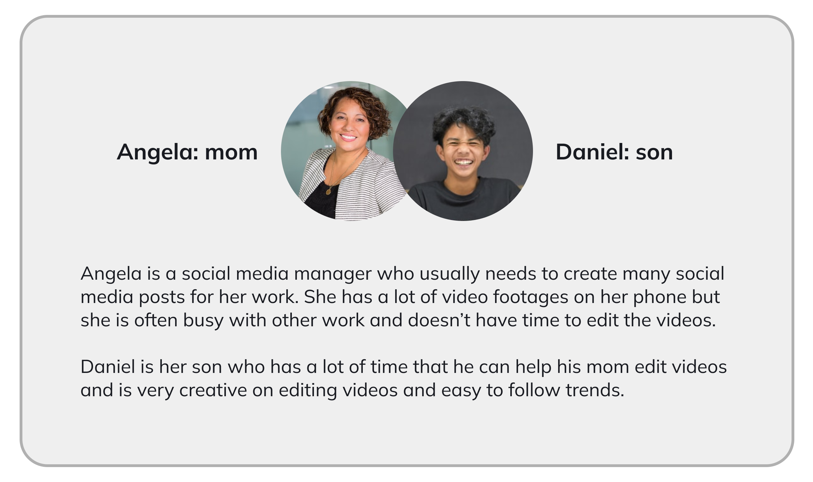
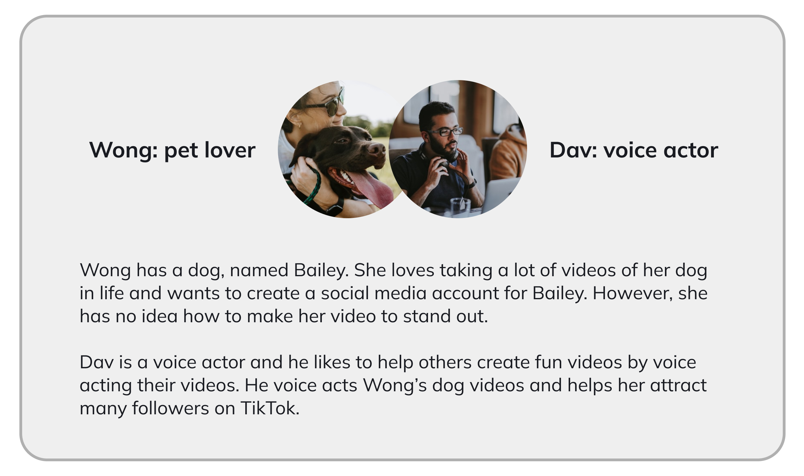
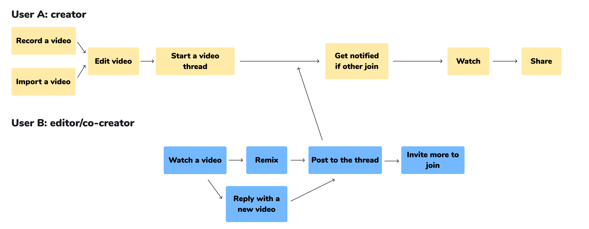
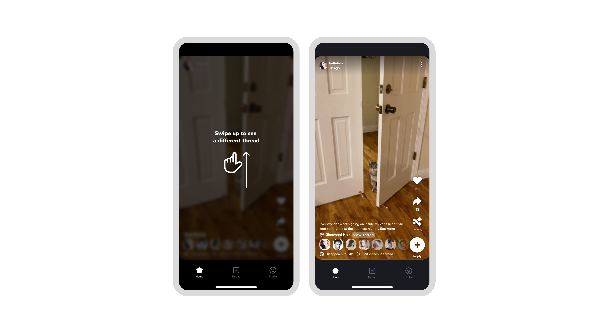
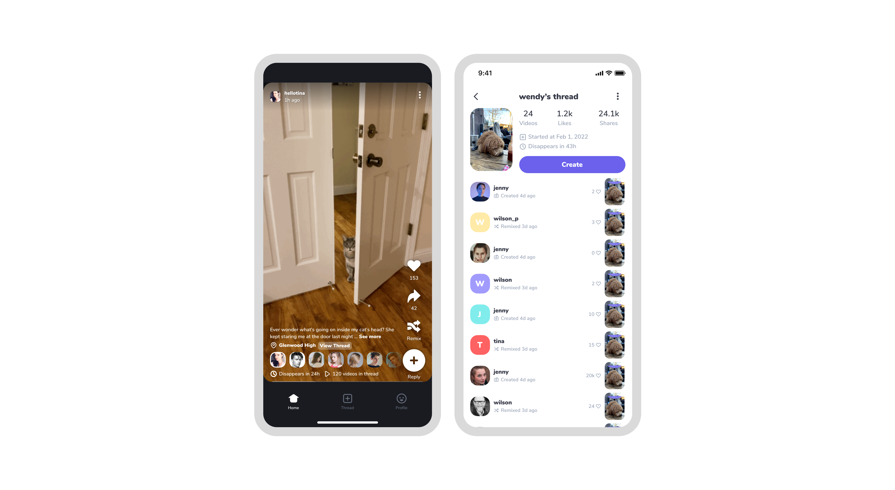
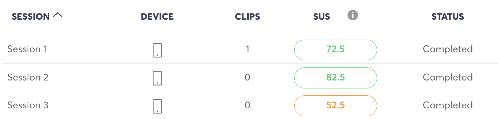

How to build a co-creation experience for the creator community
Bubble Camera Case Study | 📍Product design at Youpi
What is Bubble Camera app?
Bubble Camera app is a digital camera app that is designed for the creator community. It tries to bring creators together with fun & authentic interactions that video technology can empower. It is Youpi’s 2nd product exploring the possibilities of camera apps, aiming to create a new social camera that connects people via disappearing video threads and various remix tools. Our team believes that serendipity among people can be built in a fun and creative way.
To comply with my non-disclosure agreement, I have omitted and obfuscated confidential information in this case study. All information in this case study is my own and does not necessarily reflect the views of Youpi.
Problems
Short video content creation is a multi-effort needed process. It involves multiple things to make an outstanding video: good video footage, a good content-creation idea, editing skills on captions, stickers, sounds, visual effects etc. A single content creator is hard to be good at everything listed above. It would need other creator’s help to accelerate the creation process and create a better video.
There are 2 groups of people identified within the creator community:
- Group A: people who have many video footage but don’t know how to make a good video
- Group B: people who are good at editing videos but don’t have good video resources to work on
Solutions
Bubble Camera app is aiming to build a platform that connects Group A and Group B together, allowing Group B to remix with Group A’s videos in an easy and fun way. It seeks to offer a solution helping creators connect with others genuinely and interact with others deeply.
My Role
I have joined Youpi since it was founded. As the founding designer, I am collaborating closely with cross-functional teams of engineers, marketing people, community managers etc. My responsibilities include high-level strategy design, user research, wireframing, prototyping, UX/UI design, user testing, devs & QA’s support. I am also managing a design team working on creating graphic assets, marketing materials and the official website.
Research
I was reaching out to the creator community over platforms of TikTok, Facebook, Instagram (Reels), Reddit, YouTube to build up a beta group who have interest in Bubble Camera and would like to accept user research. User research is conducted in the form of 1-on-1 user interviews and user surveys and in product exploratory stage and concept testing stage.
The followings are some insightful findings which helps me make decision in later design process:
- Many people have much more videos saved in local albums than posted.
- If one person’s video get remixed by others, it sparks a special feeling for them.
- Likes and text comments are not enough in terms of genuine interactions.
- It is fun to remix others content and share to one’s own networks.
- Shared great remixes improve brand recognition and user acquisition.
Competitor Analysis
There are apps/websites which focus on creator community:
Use Case
After talking to the creator community, I was able to picturalize some use cases for Bubble Camera:
Use Case 1:
Use Case 2
User Flow
Based on the user research conducted, I was able to draw out the user flow for both Group A user and Group B user.
Design System
I was building up the design system for the Bubble Camera app from scratch, including app logo, icons, button style, font style, etc. To make sure the app is accessible to everyone, I followed Web Content Accessibility Guidelines (WCAG) standards.
Design
Camera creation flow:

Video consumption flow:
Remix Tools: sticker, visual comment, voiceover, stitch, duet

Video Thread Design:
Evalution
I conducted twenty minute long unmoderated user testing with 25 participants of the age group 18 - 24. All these 25 participants are living in the United States and often creating short-form videos online.
The user testing session was conducted in 3 rounds: One round focused on the creation flow, one round focused on the remixing flow, and the 3rd round focused on both creation flow and remixing flow. In each round, each participant was asked to complete a series of tasks, including asking their first impression of the app, completing creation/co-creation tasks, what is their understanding of some terms, how is their overall experience, would they promote the app to the others etc. The tests were conducted on user testing website UserFeel.
Findings
Here are some findings from the user testing:
- The completion rate is 90%.
- 20 of 25 participants said that the app is very easy to use.
- 18 of 25 participants expressed that the app reminds them of TikTok or Snapchat, so how to make the app differentiated from these apps is the next step to consider.
- Over half of the participants could quickly understand the core concept that Bubble Camera is promoting: video thread and remix
App Download
Bubble Camera app is recently launched in US AppStore.
If you are interested in trying Bubble Camera app but outside United States, please join the beta group to download the beta app. Download beta app